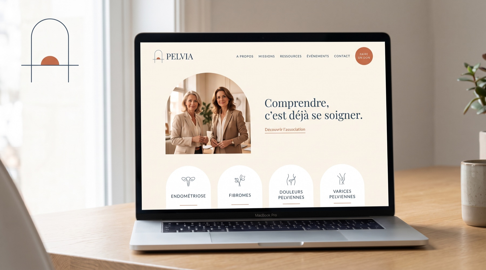
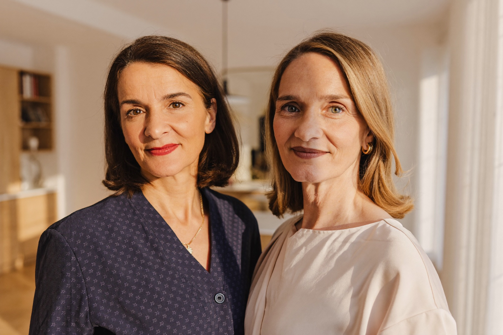

Projet d'association · Pays Basque · Landes · Béarn
Rendre visibles les douleurs invisibles.
Endométriose, fibromes, douleurs pelviennes chroniques, varices pelviennes : des milliers de femmes du territoire vivent avec des symptômes que personne ne voit. Pelvia naît pour les informer, les orienter et les accompagner.
La santé pelvienne féminine
Le projet
Une association médicalement incarnée,
sur un territoire qui n'en a pas.
Portée par deux chirurgiennes gynécologues exerçant à Bayonne, Biarritz et Dax, Pelvia couvre le champ que personne n'occupe : les pathologies fonctionnelles et bénignes du pelvis féminin — fréquentes, invalidantes, longtemps banalisées.
Informer
Des contenus pédagogiques rédigés et validés par des médecins, accessibles sans être anxiogènes. Comprendre, c'est déjà se soigner.
Orienter
Réduire l'errance diagnostique — sept ans en moyenne pour l'endométriose — en aidant chaque femme à trouver le bon interlocuteur, au bon moment.
Accompagner
Ateliers, soins de support, événements et communauté locale : un réseau de soins et de soutien fédéré sur le Pays Basque, les Landes et le Béarn.
Le symbole
Une porte ouverte sur l'aube.
L'arche — la porte par laquelle on sort de l'errance et l'on entre dans un parcours. Ouverte en sa base, toujours : on peut la franchir. Elle fait écho aux porches du territoire, sans folklore.
L'horizon — la ligne qui traverse et dépasse le seuil : le parcours de soins continue au-delà de la porte, et relie chaque support de la marque d'un seul trait.
L'aube — le demi-soleil terracotta posé sur l'horizon : le jour se lève sur des douleurs longtemps restées dans l'ombre. C'est la promesse de Pelvia, dessinée.
L'identité
Médicale sans froideur,
féminine sans cliché.
Playfair Display
Titres & wordmark — l'élégance éditorialeFigtree
Textes courants — la clarté accessibleLa méthode
Un logo qui vient de loin.
Le symbole final n'est pas un premier jet : quinze noms étudiés, six territoires graphiques explorés, trois séries d'affinements, une planche de validation — puis le développement complet du logotype retenu.


Les supports
La marque en action.



Les fondatrices
Deux spécialistes, un même engagement.

Dr Claire Théodore
Gynécologue obstétricienne · Bayonne — Dax
Spécialiste des pathologies mammaires et pelviennes bénignes, de l'endométriose et de la chirurgie de la fertilité. « Cette association existe pour que les femmes sachent plus tôt. »
Dr Dounia Skali
Chirurgienne gynécologue · Bayonne — Biarritz
Spécialiste de la prise en charge chirurgicale de la femme et de la chirurgie gynécologique fonctionnelle. « Informer fait partie du soin. »
Photographie d'illustration provisoire — remplacée par les portraits officiels lors du shooting de lancement.
La suite
De la marque au lancement.
Choix définitif du concept par les fondatrices, dépôt du nom et des domaines.
Vectorisation finale, charte graphique, site complet, templates et dossier partenaires.
Shooting officiel, film manifeste, premiers contenus pédagogiques validés.
Landing, réseaux sociaux, presse locale et conférence de lancement.